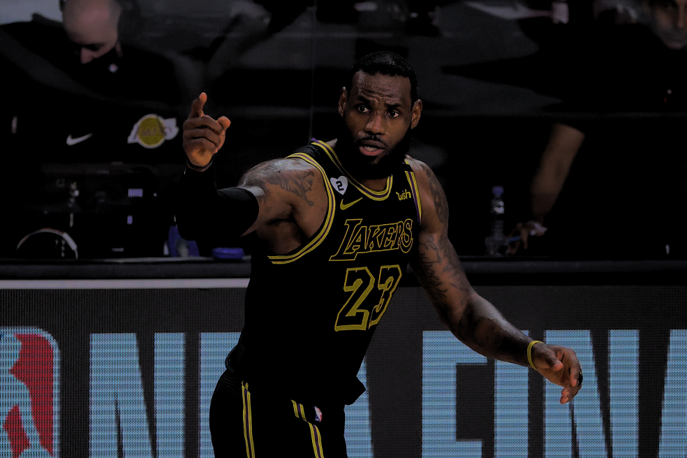

LeBron James diz estar confiante no bicampeonato
Após uma campanha memoravél em 2019/2020, Lakers de LeBron
quer repetir os feitos e levar o bicampeonato para Los Angeles

Lebron James durante o jogo contra o Portland Trail Blazers onde deixou 34 pontos
No jogo de hoje (sábado) tivemos uma bela partida entre Los Angeles Lakers contra Portland Trail Blazers, onde tivemos o placar final de 123x121 para o Los Angeles Lakers
A partida em si estava 121x121 faltando 3 segundos, LeBron aproveitou a falha da marcação de Carmelo Anthony e enterrou para consagrar a sexta vitória consecutiva do Lakers na temporada. Diferente dos outros jogos, o time dos Lakers tiveram dificuldades em marcar o estrela do Trail Blazers (Lillard), ele deixou tambem no jogo 47 pontos. Lillard e LeBron estão disputando para ver quem sera o mpv do ano.
Ao final do jogo Lebron foi entrevistado e declarou "Nosso time é muito forte, estamos preparados a tudo e para qualquer jogo. Estamos numa boa sequência e o time está muito entrosado". Em seguida o Reporter perguntou sobre como está a preparação para o bicampeonato, Lebron respondeu:"Estamos focado em trazer mais uma taça a Los Angeles e estou confiante, pois o elenco é muito bom e vitorioso". LeBron na coletiva de imprensa informou que "nao nós sentimos pressionados em vencer nossa segunda taça seguida, isso é nossa obrigção vencer e vamos! Essa camisa é muito pesada e tenho orgulho de fazer história com ela".
O Líder da conferência Oeste Los Angeles Lakers irá para Miami jogar com o Miami Heat na segunda-feira as 22:00 (jogo que poderá acabar com a sequência dos lakers). Já o Portland Trail Blazers irá para o Canadá enfrentar o lider da Conferência Leste o Toronto Raptors na terça-feira 21:00 (Jogo exclusivo da ESPN).
Veja lances de Lakers 123x121 Trail Blazers: